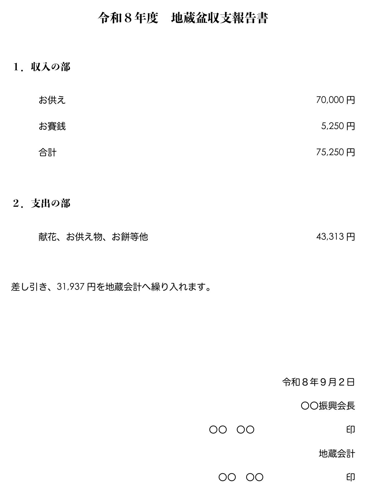

こんにちは、まっさんです。
地蔵会計を担当してくださっている方と一緒に、地蔵盆の収支報告書を作りました。できあがったのがこちらです（地域名・氏名は伏せています）。

数字だけ見ればシンプルなものですが、ここに至るまでが一苦労でした。
まず苦戦したのが、レシートの仕分けです。「地蔵盆のときに買ったものと、それ以外を分けてください」とお願いしたのですが、これがなかなか伝わりませんでした。
同じことを3回くらい説明したと思います。それでも、いざレシートの束を見せてもらうと、地蔵盆と関係のないものが混ざったまま。決して難しいお願いをしているつもりはなかったので、正直こたえました。
もうひとつ気になっているのが、通帳への入金です。今回、地蔵会計へ繰り入れる分を入金してもらうときに、摘要欄に何のお金か分かるように書いてもらうようお願いしました。
お願いはしたものの、正直、ちゃんと伝わっているのか不安です。「銀行に渡したら、あとは銀行が勝手にやってくれる」と思っておられる節があって、本当にそうなのか、こちらも確信が持てません。
まだ実際に銀行へは行っていません。地蔵会計さんには、9月3日以降に入金してもらう予定です。
ただ、窓口でどなたが対応してくださるかは分かりませんし、いつも同じ担当者とは限りません。お願いした摘要欄の書き方が、その場で対応してくださる方にちゃんと伝わるのか。もし伝わらないまま入金されてしまったら、通帳を見返しても何のお金か分からず、お互い訳が分からないカオスな状態になってしまうんじゃないか。そんな不安が拭えません。
数字は合っていても、その中身がちゃんと伝わっているかどうかは、また別の話なんやなと感じています。入金してもらった後、また書きます。
ほな、また。